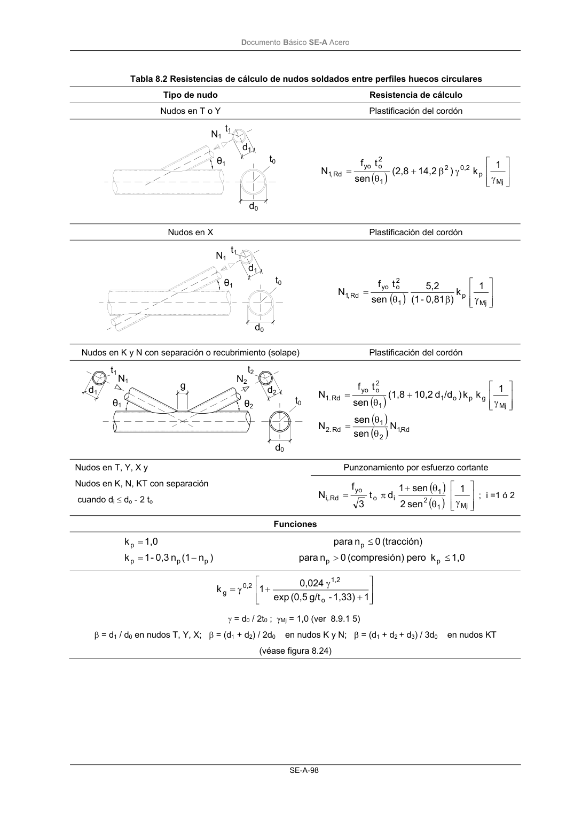

DB-SE-A Acero · edición 2007-10-23 · capa oficial
Documento DB-SE-A-oficial · SHA-256 del PDF 9ed9ea694aabfbda3bfbbef40dfe9223fde05d13c35bc2ba9751e5a96a22a64f
Copia fiel del PDF fuente · Fuente oficial
Ficha de la disposición en la fuente oficial
Formatos: JSON del segmento · Markdown
( ) ) γ γ β + θ = Mj p 0,2 2 1 2 o yo Rd ,1 1 k ) 14,2 (2,8 sen t f N Nudos en X Plastificación del cordón ( ) ) γ β θ = Mj p 1 2 o yo Rd ,1 1 k ) 0,81 - (1 5,2 sen t f N Nudos en K y N con separación o recubrimiento (solape) Plastificación del cordón ( ) ) ( ) ) ( ) ) Rd ,1 2 1 Rd . 2 Mj g p o 1 1 2 o yo Rd . 1 N sen sen N 1 k k ) /d d 10,2 (1,8 sen t f N θ θ = γ + θ = Punzonamiento por esfuerzo cortante Nudos en T, Y, X y Nudos en K, N, KT con separación cuando di≤ do - 2 to ( ) ) ( ) ) γ θ θ + π = Mj 1 2 1 i o yo .Rd ,i 1 sen 2 sen 1 d t 3 f N ; i =1 ó 2 Funciones 1,0 k pero n) (compresió 0 n para ) n (1 n 0,3 - 1 k (tracción) 0 n para 1,0 k p p p p p p p ≤ > − = ≤ = + γ + γ = 1 1,33) - g/t (0,5 exp 0,024 1 k o 1,2 0,2 g γ = d0 / 2t0 ; γMj = 1,0 (ver 8.9.1 5) β = d1 / d0 en nudos T, Y, X; β = (d1 + d2) / 2d0 en nudos K y N; β = (d1 + d2 + d3) / 3d0 en nudos KT (véase figura 8.24) N1 N2 t1 t2 θ1 θ2 d1 d2 t0 g d0 d1 t0 t1 d0 N1 θ1 N1 t1 d1 d0 t0 θ1 DocumentoBásico SE-A Acero SE-A-99 0 1 2 3 4 5 −12 −8 −4 0 4 8 12 kg g/t0 nudos con solape nudos con separación γ=7,5 γ=10 γ=12,5 γ=15 γ=17,5 γ=20 γ=22,5 γ=25 Figura 8.24 Valores del coeficiente kg
